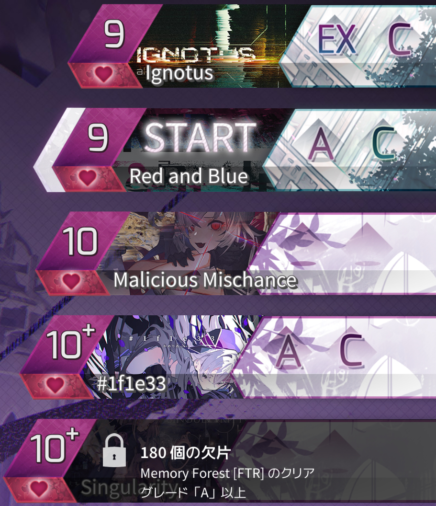
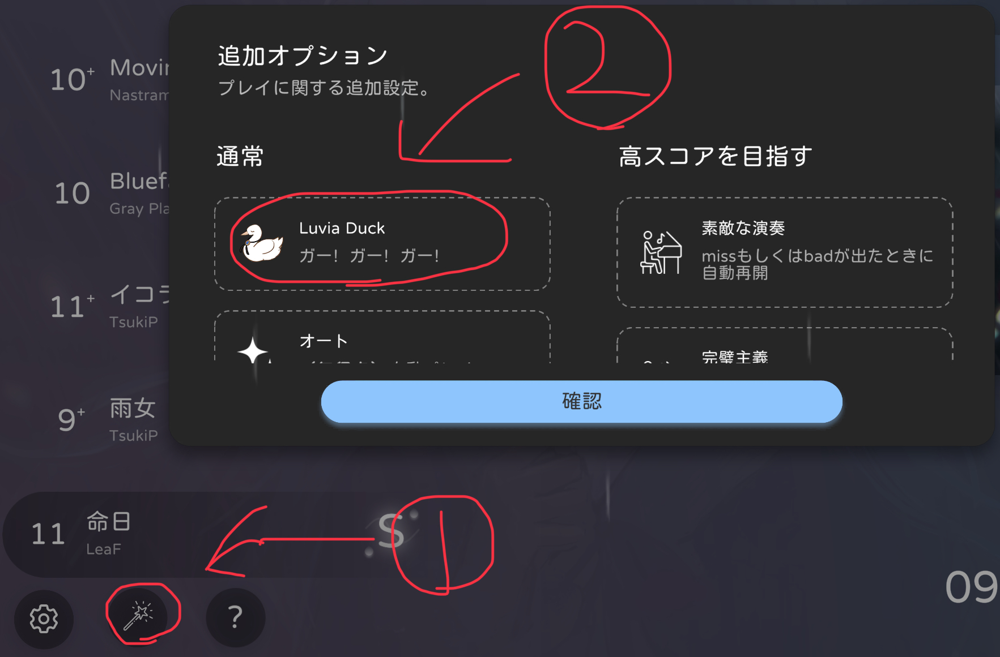

2024年度音ゲーエイプリルフールまとめ
いろいろ～
arcaea
曲を見ると「Ver55.6」の欄に「???」が。
押すと待つか聞かれるので待つ。するとMain Menuに戻される
これを繰り返すと楽曲が出現します
待てばいいんです
過去のエイプリルフールは該当曲名の隣のハート連打で出すことができます。
該当楽曲↓
phigros
phigrosは毎年、事前の告知で入る新曲とその他remix曲が来ますね！
Phigr👽sは2024/04/1+1-1+1-1...にアップデートを行います！今回はシングル１曲！
— Phigros公式 @ Pigeon Games (@Phigros_PGS_JP) March 25, 2024
「BRAIN HACKER」 by: SOMON @SOMON72642532
…ってなんやこの告知画像は？！ちょま、これ作ったやつ出てこい！！脳がぽっぽにやられてもうたんか？！今日の告知どないすんねん！！#PhigrOs #Pigeon_Games pic.twitter.com/qToPuAd5XW
これが新曲枠ですね！（簡単な方）
問題はremixのほうですね...毎年あほみたいなものが来るので（曲が）楽しみです！！！
追記：ios版、遅れるらしいです。やりたかったなぁ
TAKUMI³
公式Xに告知ポストがありましたね！
【大人気機能が2年ぶりに復活！】
— TAKUMI³公式@アカウントの移行をお願いします。 (@takumi_cubic) March 31, 2024
みんな大好きガチャが復活！
なんと10連ガチャが回せるようになりました！
中身は遊んでみてのお楽しみ！
4月1日 0:00アップデート予定！
各アプリストアで「TAKUMI」で検索してダウンロード！！！！
#TAKUMI_Cubic pic.twitter.com/Rg2yNiVMKV
ガチャを引くと称号、アイコンをgetできます。
あとはお遊び譜面が多数ありますのでやりましょう!
Paradigm:Reboot
[v2.█.41 U██ate]
— Paradigm: Reboot (@ParadigmReboot) March 29, 2024
- Decrypting data...
- Progress: ████%
- Finished.
Here's the l█st of the decr██ted data:
- Inner Norm [CHAOTIC] // 侧
- BPM=RT [CHAOTIC] // ↻
- IKAROS [CHAOTIC] // 双
- Yokyuumi [CHAOTIC] // 初
- 零號車輛 [CHAOTIC] // ██
- ████████… pic.twitter.com/FsQDYysu1C
公式Xに告知ポストがありましたね！
解放されてない曲が多くて全然できなかった...
エイプリルフール専用ページのようなものから遊べるみたいですね
RAVON
どうせRAMENでしょう。確定です。
RAMENでしたね。公式は忘れてたっぽいですが...ｗ
milthm
1，「夢のテープ」チャプター内にある「Oiiaioooooiai」をプレイ
2，「天気予報」チャプターを長押して削除
3，消した場所をタップ
4，以下動画↓
更に、上記を行った後に
「Luvia Duck」を有効にする（以下画像）
5，その状態でもう一回2～3を行う
6,以下動画↓
とてもやばい。非常にやばい。かなりやばい。
ちなみに、一度行うと「夢のテープ」チャプターに追加されます
Lanota
みんな大好きラーメンゲームが追加！？
曲に合わせて勝手にフルーツ有象無象が降ってくる原作にもない特別仕様が！！！
Lanotaは毎年ユーモアがすごいなぁ
太鼓の達人
以下のツイートのQRコードを筐体の読み込み口に照らしてください
かっちゃん「エイプリルフール3兄弟を連れてきたドン！」
— 【公式】太鼓の達人 ゲームセンター版 (@taiko_team) March 31, 2024
どんちゃん「エイプリルフール3兄弟！？」
黄「OK好」
よ「ｴｲﾖ!」
N「わ～い！おめでとう」
？？？「縺ゅｊ縺後→縺�#縺悶＞縺ｾ縺�」
一同「え？」
どんちゃんたちが見たものとは・・・？#太鼓の達人#taiko765 pic.twitter.com/147d4eFRpx
暗黒で混沌な時間が過ごせるでしょう
ユメステ
ジュゴンかわえ～
ということでお蔵入り譜面やその他が追加されています
ヤネウラを見ましょう